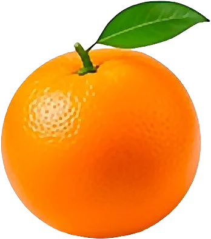

Orange

Agrume d’hiver ; les oranges sanguines arrivent en janvier.
- Saison : décembre, janvier, février, mars, avril
- Pleine saison : janvier, février
- Famille botanique : Rutacées
Histoire
Originaire de Chine du Sud et d’Asie du Sud-Est, l’orange douce arrive en Europe au XVᵉ siècle grâce aux navigateurs portugais. Longtemps réservée aux élites, elle était cultivée dans des orangeries, comme celle du château de Versailles, et offerte comme un cadeau précieux à Noël.
Origine et régions de production
L’orange vendue en France vient surtout d’Espagne :
- Espagne (Valence, Andalousie)
- Italie (Sicile)
- Maroc
Bienfaits
L’orange est un grand classique de l’hiver :
- Vitamine C : Une orange couvre une large part des besoins quotidiens.
- Flavonoïdes : Comme l’hespéridine, concentrée dans la partie blanche.
- Énergie modérée : Environ 47 kcal/100 g.
- Fibres : Le fruit entier est plus rassasiant que le jus.
Variétés
- Navel : Sans pépins, avec un petit « nombril ».
- Maltaise : Demi-sanguine, très juteuse.
- Sanguine : Chair rouge, goût de fruits rouges.
- Valencia : Tardive, parfaite en jus.
Conserver sans gaspiller
- Conservation : Au frais, à l’air libre : 2 semaines. Au frigo, jusqu’à 1 mois.
- Congélation : En jus, en zestes ou en quartiers : jusqu’à 6 mois.
- Rien ne se jette : Les zestes se râpent et se congèlent pour les gâteaux. Les écorces se confisent. Une orange ramollie fait un bon jus.